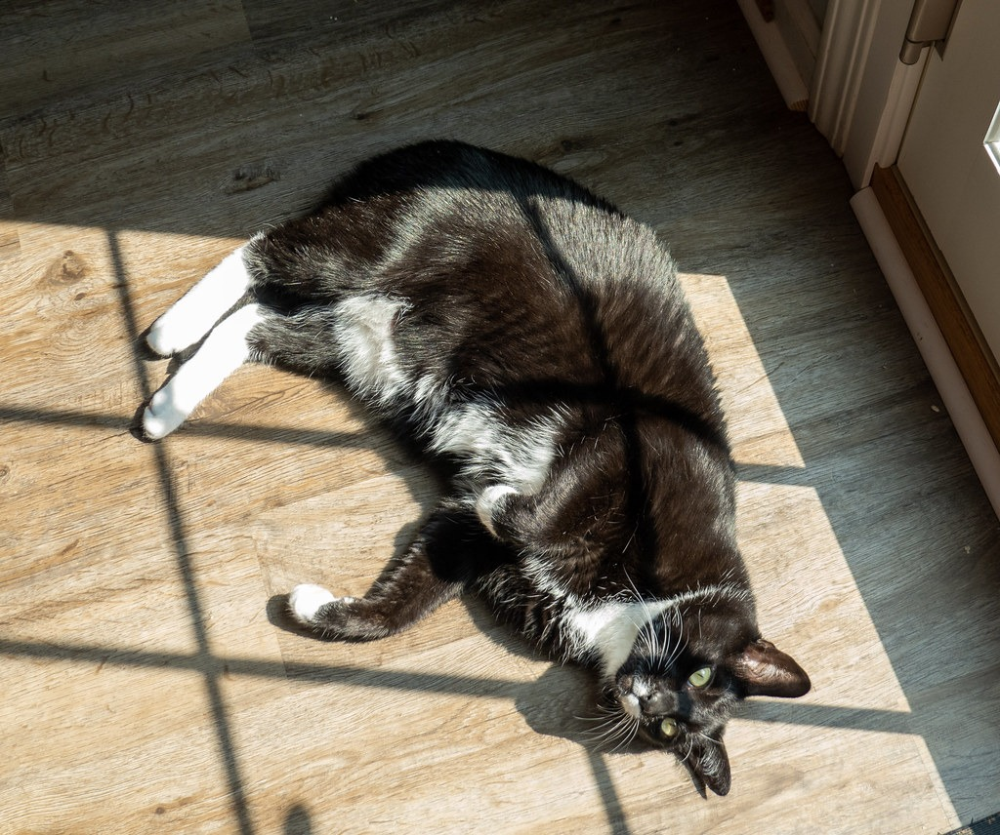

猫の寒さ対策ガイド：寒がりのサインと、冬の部屋づくり7つのコツ
公開 2026-10-25・更新 2026-10-25・日本ねこ編集部
結論から言うと、猫の冬の過ごしやすさは「部屋の温度」より「猫が自分で選べる場所があるか」で決まります。室温は20〜26℃前後、湿度は40〜60％を目安に、暖かい寝床と少し涼しい逃げ場を両方つくってあげてください。

朝晩がひんやりしてくると、うちの子がいつもより長くひざの上にいてくれる。うれしい季節ですよね。でもそれは、もしかすると「ちょっと寒いんだけど」という合図かもしれません。
猫のご先祖さまは砂漠の生まれと言われていて、もともと暖かい場所が大好きな動物です。この記事では、猫が寒がっているときのサインと、冬の部屋づくりのコツを、猫と暮らす人の目線でまとめました。
猫が「寒い」と感じているときのサイン
猫は言葉で寒いとは言ってくれません。かわりに、体の使い方で教えてくれます。次のような様子が増えたら、部屋の温度を見直してみましょう。
- 体をぎゅっと丸めて寝ている：しっぽで鼻先までくるんと包んだ「アンモニャイト」は、熱を逃がさないための寝方です。
- 毛をふくらませている：空気の層をつくって体温を守っています。
- 暖かい場所から動かない：日なた、家電の上、人の布団から出てこない。
- 耳の先や肉球が冷たい：さわったときにひんやりしていたら要注意です。
- 水を飲む量が減る：冬は飲水量が落ちやすく、これがあとで書く「冬の水分不足」につながります。
反対に、おなかを出して長くのびて寝ている「へそ天」が見られるなら、その部屋はうちの子にとってちょうどいい温度です。

冬の室温と湿度の目安
| 室温の目安 | ひとこと | |
|---|---|---|
| 成猫 | 20〜26℃前後 | 暖かい場所と涼しい場所を選べればOK |
| 子猫 | やや暖かめ | 体温調節がまだ苦手。寝床を重点的に |
| シニア猫（7歳〜） | 22〜27℃前後 | 筋肉が減って体が温まりにくくなります |
| 湿度 | 40〜60％ | 乾燥しすぎは毛並みや呼吸の負担に |
ここで大事なのが、温度計を置く高さです。暖かい空気は上にたまるので、人の顔のあたりが24℃でも、猫が歩く床はもっと低いことがよくあります。温度計は猫の目線、床から30cmくらいの高さに置いて測ってみてください。
冬の部屋づくり7つのコツ
1. 「暖かい場所」と「逃げ場」をセットで
猫は暑くなれば自分で移動して、体温をちょうどよく保ちます。部屋全体を暑くするより、暖かい寝床を一つと、少し涼しい場所を一つ。この「選べる」状態が、冬の猫にとっていちばんの快適さです。
2. 寝床は床から少し高く
冷たい空気は床にたまります。キャットタワーの中段や、棚の上など、床から少し上がった場所にふかふかの寝床を置くだけで、体感はかなり変わります。
3. 窓ぎわの冷気をふさぐ
日なたぼっこの特等席は、夜になると家でいちばん冷える場所に変わります。厚手のカーテンや断熱シートで、夜の冷気をやわらげましょう。

4. ドーム型ベッドや毛布を一枚足す
猫は狭くて囲まれた場所が大好き。ドーム型のベッドや、段ボール箱に毛布を一枚敷くだけでも、立派な冬のおうちになります（猫が箱に入りたがる理由も読んでみてください）。

5. 水は「飲みたくなる」工夫を
冬は水を飲む量が減りやすい季節です。水飲み場を家の数か所に増やす、器を少し大きめにする、冷たすぎない常温の水にするなど、飲むきっかけを増やしてあげましょう。
6. 加湿器は猫が届かない場所に
乾燥対策の加湿器は、倒されたり、コードをかじられたりしない場所に置きます。アロマオイルを入れるタイプは、猫には使わないほうが安心です。
7. 留守番の日はエアコンを弱めに
留守番中はエアコンを弱めの設定で運転しておく家庭が多いです。そのうえで、暖かすぎたときに移動できる部屋やスペースを開けておきましょう。
こたつ・湯たんぽ・ヒーターで気をつけたいこと
冬の暖房器具は猫も大好き。ただ、猫は体の一部が熱くなっていても気づきにくく、低温やけどをしてしまうことがあります。
- こたつ：温度は「弱」に。猫が出入りできるよう布団に少しすき間を残し、長時間こもりきりにならないよう、ときどき様子を見てあげてください。
- 湯たんぽ・ペット用ヒーター：必ずカバーで包み、寝床の半分だけに敷きます。猫が「熱い」と思ったら自分で離れられる置き方が基本です。
- ストーブ・ファンヒーター：しっぽやヒゲが近づきすぎないよう、ガードで囲みます。
どれも共通するのは、「暖かさから自分で離れられること」。ここさえ守れば、冬の暖房は猫と人の両方にとって心強い味方です。
こんなときは動物病院へ
寒さ対策をしても体が冷たいまま、ぐったりして元気がない、食欲や飲水量が大きく落ちた、トイレの回数が明らかに変わった。そんな様子があれば、早めにかかりつけの動物病院に相談してください。冬は飲水量が減るぶん、おしっこまわりのトラブルが増えやすい季節とも言われています。
まとめ
猫の冬支度は、特別な道具よりも「選べる場所」をつくることから。暖かい寝床をひとつ、涼しい逃げ場をひとつ、水飲み場を少し多めに。それだけで、うちの子の冬はぐっと過ごしやすくなります。冬のおうち時間をもっと楽しくするアイデアは、室内で暮らす猫が喜ぶこと5つにまとめています。
今夜、うちの子はどこで丸くなっていますか？アンモニャイトの写真が撮れたら、ぜひInstagramで #JapanNeko をつけて見せてください。
参考にした情報
- 老猫が快適な冬の室温は「22~27℃」 獣医師がおすすめする暖房器具は?【獣医師に聞いた】（All About ニュース）
この記事は一般的な情報をまとめたものです。猫の年齢や持病によって適した環境は変わるため、気になることはかかりつけの動物病院に相談してください。
よくある質問
猫にとって冬の室温は何度くらいが目安ですか？
一般的には20〜26℃前後、湿度は40〜60％くらいが目安とされています。子猫やシニア猫はもう少し暖かめが安心です。温度計は猫が過ごす床に近い高さに置いて測りましょう。
猫は寒いとどんなしぐさをしますか？
体をぎゅっと丸める、毛をふくらませる、暖かい場所から動かない、人のひざや布団にもぐりこむ、耳や肉球が冷たい、といった様子がよく見られます。
留守番中、暖房はつけっぱなしでいいですか？
エアコンを弱めの設定で運転しておく家庭が多いです。暑くなったら逃げられるように、暖かい場所と涼しい場所の両方を用意しておくのがポイントです。
こたつや湯たんぽは猫に使っても大丈夫ですか？
使えますが、低温やけどと脱水に気をつけましょう。こたつは温度を弱めにして出入りできるすき間を作り、湯たんぽはカバーで包んで、猫が自分で離れられる置き方にします。